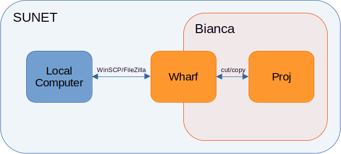
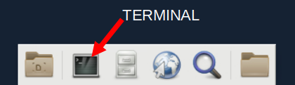
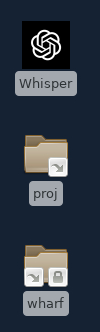
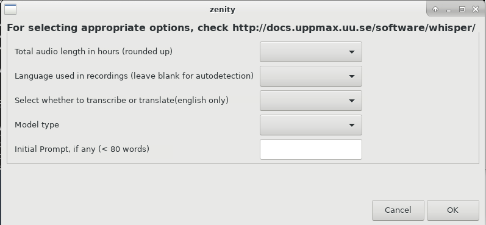
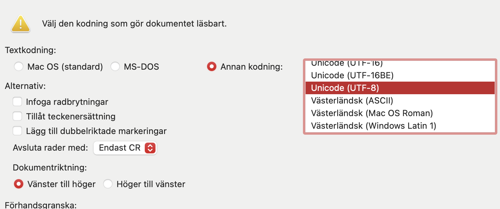

Whisper¶
Introduction¶
This guide provides instructions for loading and using OpenAI's Whisper, an automatic speech recognition system. Whisper app is available on Bianca or can also be loaded as a module.
AI tool caution
Like all other AI models, Whisper too hallucinates while transcribing or translating. ie, "make-up" words or even sentences, resulting in misinterpretation or misrepresentation of the speaker.
Quality of transcriptions/ translations and audio formats
Transcriptions (error rate):
- Swedish: ~10%
- English: ~5%
- English with heavy accent: ~ 20%
Translations:
- Any to English: "DeepL" level performance. Slightly better than google translate.
Supported file types: mp3, mp4, mpeg, mpga, m4a, wav, webm and wma.
Quality as a factor of duration of recordings:
- A few minutes: Excellent
- A few minutes to an hour: Excellent at the beginning, then detoriates.
- An hour or more: Excellent at the beginning, then detoriates.
Quality as a factor of noise and count of speakers:
- 2 speakers: Excellent
- Background noise: Good
- 2+ speakers: Very Good
- Conversational overlap: Average. Difficulty disambiguating speakers.
- Long silences: Good. Might repeat sentences and get stuck in loop.
Whisper also tries to give separate sentences for different speakers. But it is not guaranteed.
Recordings from Dictaphone
If you record using dictaphone such as Olympus DS-9000,
it would by default record in .DS or .DS2 file formats
which are NOT supported by Whisper.
Make sure to change the settings on the dictaphone
to .mp3 format before you start recording.
Follow this guide
to convert your DS or .DS2 recording to .mp3
using the software that comes with your dictaphone.
Else, you can also download the sofware
and then follow the same guide.
Glossary
- SUPR account : Gives access to project management account for submitting project proposals on SUPR.
- UPPMAX account : Gives access to UPPMAX servers, like Bianca.
- GUI : Graphical User Interface for taking transcription/translation inputs.
- WinSCP / FileZilla: user interface to send data from your computer to Bianca and vice-versa.
- SUNET: Swedish university network
- Terminal : Black text-based environment that is used for performing jobs.
- Wharf: private folder in Bianca that is used to transfer data to and from your computer.
- Proj: project folder in Bianca that is shared among all project members.
- Job: A request for transcribing/translating one or many recordings.
- Slurm: "job" handler.
Checklist for new project
- SUPR account
- Submit project proposal
- UPPMAX username and password
- UPPMAX two factor authentication.
Accessing your project¶
Following steps are derived from Project application for Bianca:
-
Register an account on SUPR.
-
Apply for a project for sensitive data at Bianca. Give adequate information while creating your proposal by following this template.
-
Register an account for UPPMAX at SUPR by clicking "Request Account at UPPMAX" button. You will receive an UPPMAX username and password via email.
-
Setup two factor authentication for this newly created UPPMAX account. (Video)
Whisper App¶
Step 1: Data transfer from local computer to Bianca¶
-
Transfer your data from your local computer to Wharf using WinSCP app (for Windows only) or FileZilla app (Mac, Windows or Linux). Instruction on how to do it is in their respective links or watch FileZilla Video.

Step 2: Transcribing/Translating¶
-
Login to Bianca. It requires your UPPMAX username (visible in SUPR), project name and two factor authentication code. Make sure you are inside SUNET for the link to work.
-
Click on the Terminal icon on the bottom of the Desktop and enter the following command in it to load Whisper app. If you cannot find the Terminal icon, you can alternatively right-click on the Desktop and select 'Open Terminal'.

Video Demo
-
You shall now see
projandwharffolders on your Desktop along with a Whisper application icon.wharfcontains the data that was transferred in Step 1. (Next time you start transcribing/translating by logging in again to Bianca, you can start from this step and skip the previous one, sincewharfandprojfolder are already created.)
-
Open
wharfandprojfolder. Select all the data that you transferred inwharf, drag and drop it into theprojfolder. NOTE: if you drag and drop, it will cut-paste your data instead of copy-paste. Do not keep files inwharffor a long period, as this folder is connected to the outside world and hence is a security risk.proj, on the other hand, is safe to keep data in as it is cut-off from the internet, so move your data there. -
Click on Whisper application on Desktop. It would look like this:

Select appropriate options, or use the following for the best results:
-
Total audio length in hours: [give a rough average if transcribing files in bulk, rounding up to nearest hour]
-
Language used in recordings (leave blank for autodetection): If you have multiple languages in the selected recordings or you are unsure about the spoken language, leave it blank. If your language of choice is unavailable in the drop down, check the "Languages available" list for its availability and contact support.
-
Select whether to transcribe or translate (english only): 'Transcribe' [for language X -> language X]. 'Translate' [for language X -> English].
-
Model: large-v2
-
Initial Prompt: [leave blank]
Select your files that need to be transcribed/translated. Then, click 'Okay'. Select your folder where you would like to save your transcriptions/translations. Then, click 'Okay'. After this, your job will be submitted, and you will have to wait for the files to be processed.
Video Demo
-
Step 3: Monitoring jobs¶
-
Your job will first wait in a queue and then start executing. To first check if your job is waiting in the queue, type
squeue --me -o "%.30j"on terminal. If you see your job nameWhisper_xxxit means it is in the queue, wherexxxis the date and time of job submission, example: Whisper_2024-10-25_11-10-30. -
To check if your job has started executing, locate a file named
[Whisper_xxx_yyy].outthat will get created inWhisper_logsfolder insideprojfolder, wherexxxis date and time of job submission andyyyis your username followed by a "job id", example: Whisper_2024-10-25_11-10-30_jayan_234.out. This contains a progress bar for each recording that you sent for transcribing/translating. -
If neither job name
Whisper_xxxwas found in queue, nor a[Whisper_xxx_yyy].outwas created inWhisper_logs, contact support.
Step 4: Data transfer from project to local computer¶
-
Drag and drop your transcriptions/translations from
projfolder towharf. -
Use WinSCP/FileZilla like you did in Step 1 and transfer your data from
wharfto your local computer.
Output files¶
By default you receive 5 types of output files for each file you transcribe/translate:
- With timestamps:
.srt,.vtt,.tsv - Without timestamps:
.txt - With detailed model metadata:
.json. - The most popular ones are
.srtand.txtformats.
On Mac, .txt, .srt and .vtt can be opened in Word by:
- Tap with two fingers
- Select Encoding as "Unicode (UTF-8)"
- Change the name of the file like
some_name.docxand change type of file to.docx - Open the file and then Save As a new file.

Advance settings
Use below features only if transcriptions/translations are not satisfactory and for less spoken languages or languages that are not having good resources online for understanding :
-
When asked for Initial Prompt, provide a list of comma separated words or sentences (less than 80 words) that describe what the recording is about or the words used by the speaker in the recording. It should be in written in same language as the language in spoken in the recordings.
-
Try switching to Model: large-v3.
-
Use combination of both 1 and 2.
-
If you are sure about the language used in the recording, use the dropdown menu and select the appropriate language.
Languages available
Following languages are available for transcribing. If your language of choice does not appear in Whisper application but is listed here, contact support:
en: "english",zh: "chinese",de: "german",es: "spanish",ru: "russian",ko: "korean",fr: "french",ja: "japanese",pt: "portuguese",tr: "turkish",pl: "polish",ca: "catalan",nl: "dutch",ar: "arabic",sv: "swedish",it: "italian",id: "indonesian",hi: "hindi",fi: "finnish",vi: "vietnamese",he: "hebrew",uk: "ukrainian",el: "greek",ms: "malay",cs: "czech",ro: "romanian",da: "danish",hu: "hungarian",ta: "tamil",no: "norwegian",th: "thai",ur: "urdu",hr: "croatian",bg: "bulgarian",lt: "lithuanian",la: "latin",mi: "maori",ml: "malayalam",cy: "welsh",sk: "slovak",te: "telugu",fa: "persian",lv: "latvian",bn: "bengali",sr: "serbian",az: "azerbaijani",sl: "slovenian",kn: "kannada",et: "estonian",mk: "macedonian",br: "breton",eu: "basque",is: "icelandic",hy: "armenian",ne: "nepali",mn: "mongolian",bs: "bosnian",kk: "kazakh",sq: "albanian",sw: "swahili",gl: "galician",mr: "marathi",pa: "punjabi",si: "sinhala",km: "khmer",sn: "shona",yo: "yoruba",so: "somali",af: "afrikaans",oc: "occitan",ka: "georgian",be: "belarusian",tg: "tajik",sd: "sindhi",gu: "gujarati",am: "amharic",yi: "yiddish",lo: "lao",uz: "uzbek",fo: "faroese",ht: "haitian creole",ps: "pashto",tk: "turkmen",nn: "nynorsk",mt: "maltese",sa: "sanskrit",lb: "luxembourgish",my: "myanmar",bo: "tibetan",tl: "tagalog",mg: "malagasy",as: "assamese",tt: "tatar",haw: "hawaiian",ln: "lingala",ha: "hausa",ba: "bashkir",jw: "javanese",su: "sundanese",yue: "cantonese"
Proposal template¶
Under the Basic Information section on NAISS SUPR, provide the following compulsory details pertaining to your project in the following fashion:
-
Project Title : Whisper service for [Name of the project]
-
Abstract: [What is the project about, give links, funding info, duration etc.]
-
Resource Usage: [Explain where the recordings are derived from, like interview recordings on device/ zoom or other forms of audio/video recordings from offline/online sources. Give the average and maximum number of recordings to be transcribed/translated. Give the average and maximum size of recordings in mins/hours. Mention if it is a transcribing or translation requirement. Mention the language spoken in the recordings, if known, and a rough estimate of number of recordings for each of these languages. Ignore the "core-hours" and "hours required to analyse one sample" requirement.]
-
Abridged Data Management Plan: [Address all points. Mention the recording file types example: .mp3, .mp4, .wav etc.]
-
Primary Classification: [Either follow the Standard för svensk indelning av forskningsämnen link given or search by entering the field of research such as 'Social Work', 'Human Geography' etc. ]
-
Requested Duration: [Mention the duration for which Whisper service is strictly required. Mentioning more duration than actually required might reflect negatively when a new allocation is requested for the same or new project next time. It is possible to request for a shorter duration of 1 month at first and then ask for a new one once the need arises again in the future.]
In the rest of the sections, provide the following information:
-
Classification Scientific: Follow the link in the Standard för svensk indelning av forskningsämnen to give a classification to the project according your domain.
-
Resources: Bianca @ UPPMAX
Module Loading
To load the Whisper module, run the following command:
This will also load the necessary dependencies, including python
and ffmpeg.
[jayan@sens2024544-bianca jayan]$ module list
Currently Loaded Modules:
1) uppmax 2) python/3.11.4 3) FFmpeg/5.1.2 4) Whisper/20240930
Command-line¶
The whisper command can be used to transcribe audio files. For example:
For more ways to run whisper, for example on cpu node or do translations, check the correct flags by doing : whisper --help
You can also check the source code with arguments here on the official GitHub repository.
Python¶
import whisper
# Load the model
model = whisper.load_model("base")
# Transcribe an audio file
result = model.transcribe("/path/to/audiofile.mp3")
# Output the transcription
print(result["text"])
Available Models¶
For making offline usage of Whisper more convenient, we provide pre-trained models as part of the Whisper module. You can list all the available models by:
[jayan@sens2024544-bianca jayan]$ ll /sw/apps/Whisper/0.5.1/rackham/models
total 13457440
-rw-rw-r-- 1 sw 145261783 Nov 10 14:22 base.en.pt
-rw-rw-r-- 1 sw 145262807 Nov 10 14:23 base.pt
-rw-rw-r-- 1 sw 3086999982 Nov 10 14:39 large-v1.pt
-rw-rw-r-- 1 sw 3086999982 Nov 10 14:40 large-v2.pt
-rw-rw-r-- 1 sw 3087371615 Nov 10 14:27 large-v3.pt
-rw-rw-r-- 1 sw 1528006491 Nov 10 14:24 medium.en.pt
-rw-rw-r-- 1 sw 1528008539 Nov 10 14:25 medium.pt
-rw-rw-r-- 1 sw 483615683 Nov 10 14:23 small.en.pt
-rw-rw-r-- 1 sw 483617219 Nov 10 14:23 small.pt
-rw-rw-r-- 1 sw 75571315 Nov 10 14:22 tiny.en.pt
-rw-rw-r-- 1 sw 75572083 Nov 10 14:22 tiny.pt